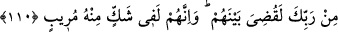

110. “Andolsun biz Musa’ya Kitab’ı verdik, fakat onda ihtilafa düşüldü. Eğer
Rabb’inden bir söz geçmemiş olsaydı elbette onların arasında hüküm verilmişti (ve
işleri bitirilmişti). Şüphesiz ki onlar da (Mekkeliler de) Kur’an hakkında derin bir
şüphe içindedirler.”
“Andolsun biz Mûsâ’ya Kitab’ı” yani Tevrat’ı “verdik.” Tevrat, hüküm ve kanun
ihtivâ eden ilk kitaptır. Tevrat’tan önceki kitaplar ise Allah’a îmân ve O’nu tek kabul
etme (tevhid) prensiplerini ihtivâ etmekteydi. Onlara “suhuf (sayfalar)” denmesi bundan
kaynaklanmaktadır.
“Fakat onda” onun hakkında, onun Allah katından geldiği hakkında “ihtilafa
düşüldü.” Kimileri ona inanırken, kimileri inkar etti. Bu bakımdan ey Muhammed, sana
verdiğimiz Kur’an hakkında kavminin ihtilafa düşmesine aldırma. Musa (a.s.) nasıl
kavmi tarafından yalanlamasına sabrettiyse, sen de bunların yalanlamasına karşı sabırlı
ol. Burada Hz. Peygamber (s.a.) teselli edilmektedir.
Hz. Peygamber (s.a.), Tâif ganimetlerini taksim ederken bazı münafıkların O’nun âdil
davranmadığına dâir ileri-geri konuşup durmaları üzerine şöyle buyurmuştur: “Allah ve
Rasûlü de âdil değilse, kim âdil olabilir! Allah kardeşim Musa’ya rahmet eylesin,
bundan daha fazla eziyet görmüş, ama o bunlara sabretmişti.”[173] Yâni, ‘Musa (a.s.)
kavminden çok eziyet görmüş olmasına rağmen şikâyet etmeden bu eziyetlere
sabretmişti. Ben sabretmeye O’ndan çok daha layığım.’ Çünkü Hz. Peygamber (a.s.)’in
zâtındaki kemal birikimi daha tam olduğu için ilâhî sıfatlardan ve rabbânî güzel
huylardan aldığı pay daha fazla ve daha çoktur.
Molla Câmî O’nu överken şöyle diyor:
Senin celal defterinden Tevrat bir rakamdır,
İncil ise senin cemal mushafından tek bir yaprak.
“Eğer Rabbinden bir söz geçmemiş olsaydı” Bu söz, onlara kıyamet gününe kadar
mühlet verilmesidir. Müfti Sa‘dî şöyle der: Daha güçlü olan ihtimal, bu sözün kıyamet
günü ile sınırlanmamasıdır. Çünkü birçok azgın müşrikler Bedir savaşı ve diğer
hâdiselerde azâba uğratılmıştır.
“elbette onların arasında hüküm verilmişti” yâni bâtıl ehlinin hak ettiği azâb
indirilerek kavminden ihtilâfa düşenler hakkında elbette hüküm verilir, işleri bitirilirdi.
Böylece onlar hak ehlinden ayrılmış olurdu.
“Şüphesiz ki onlar da” yani Mekke kâfirleri de “Kur’an hakkında derin bir şüphe
içindedirler.” Yâni onların nefisleri sıkıntılı, gönülleri perişan vaziyettedir. Her ne
kadar âyette Kur’an lafzı geçmiyorsa da maksad Hz. Peygamber (s.a.)’i teselli etmek